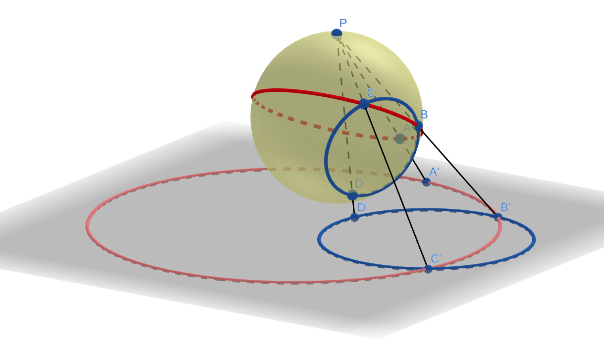
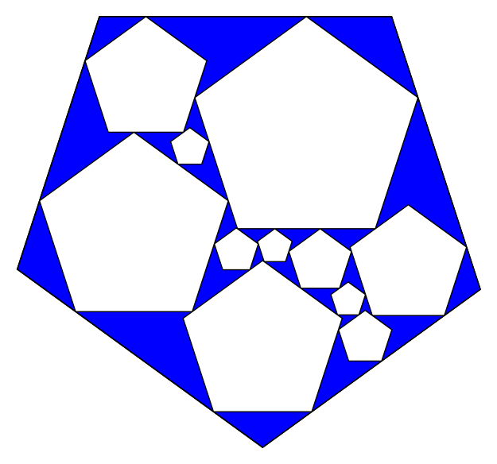
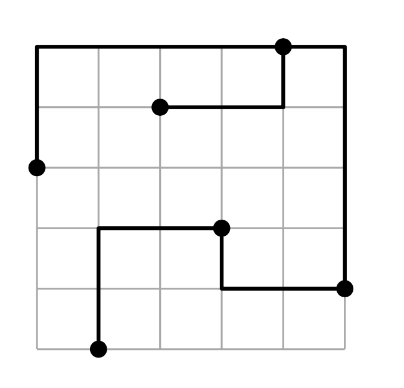
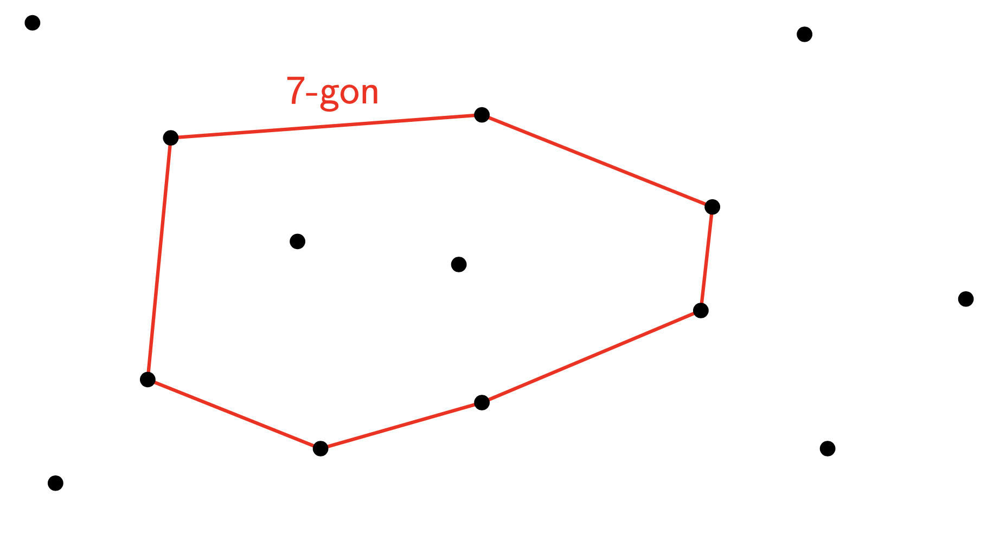
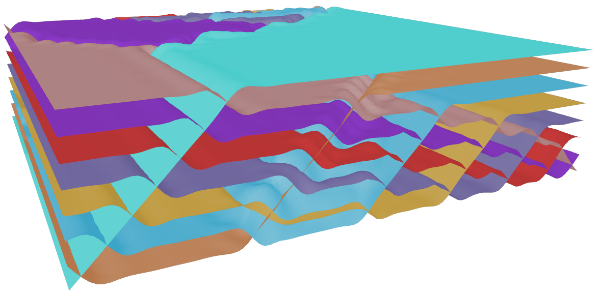
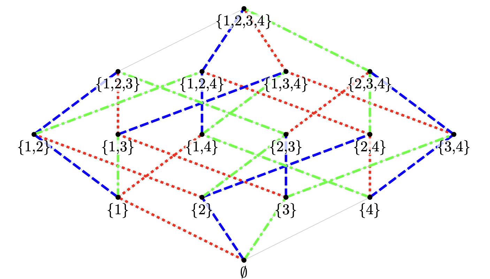
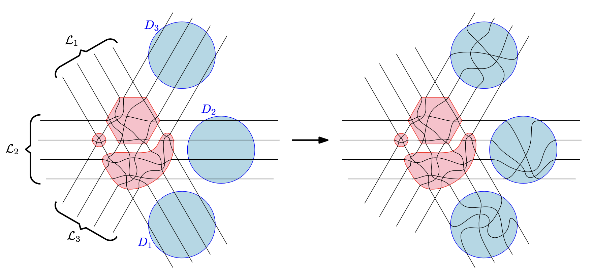
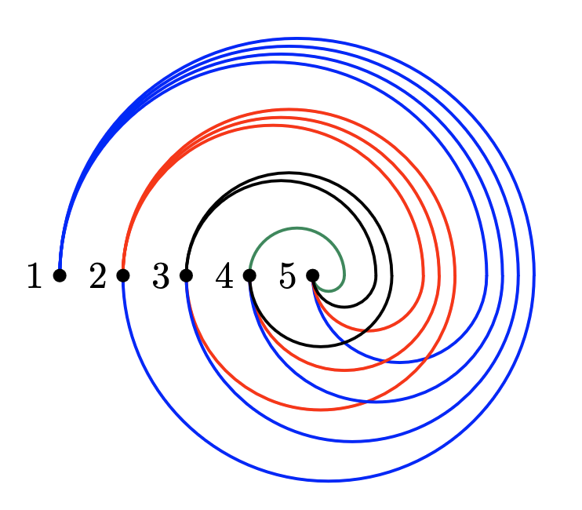

Tools and an extensive data collection for arrangements of pseudocircles, covering enumeration, realizability, and structural properties.

Implementation of the k-gon contact representation algorithm — producing visualizations and interactive animations.

Implementation of the primal-dual circle representation algorithm — producing visualizations of planar graphs via circle packings.
A collection of point sets with rare combinatorial properties — including new configurations found via computer search as well as known examples and families from the literature.
Improved a lower bound by realizing an abstract example as a concrete point configuration.

Software to investigate L-shaped point set embeddings of trees.

SAT-based computational study of Erdős–Szekeres-type problems in higher dimensions.

Full pipeline for studying signotope extensions — SAT-based search and realizability checks, intensive cluster computations, and visualization tools. Results investigated manually as far as possible.

Computational investigations using iterative SAT-solver calls to study orthogonal symmetric chain decompositions of the Boolean lattice.

A framework for counting specific partial pseudoline arrangements — automatically providing asymptotic estimations via dynamic programming.

A SAT-based framework for investigating topological drawings via rotation systems — enables automated search and verification of combinatorial properties of graph drawings.

SageMath scripts to visualize planar graphs using Tutte embeddings.
A SAT-based framework for exhaustive search for combinatorial structures by automatically pruning symmetries — supports graphs, digraphs, planar graphs, and matroids.
SageMath implementation of an algorithm to compute the leafage of chordal graphs.
Contributed to over 100 entries in the On-Line Encyclopedia of Integer Sequences — including computation of new terms, open-source code snippets, references to the literature, and cross-links between entries.